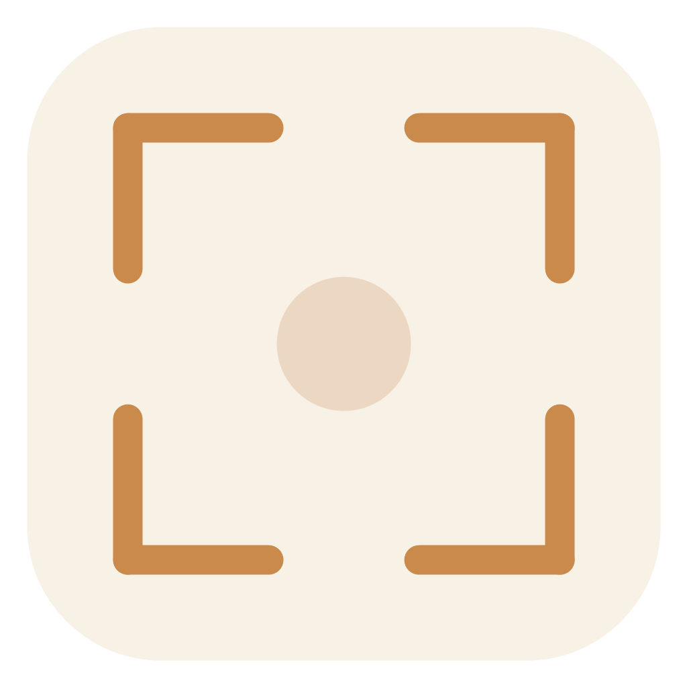
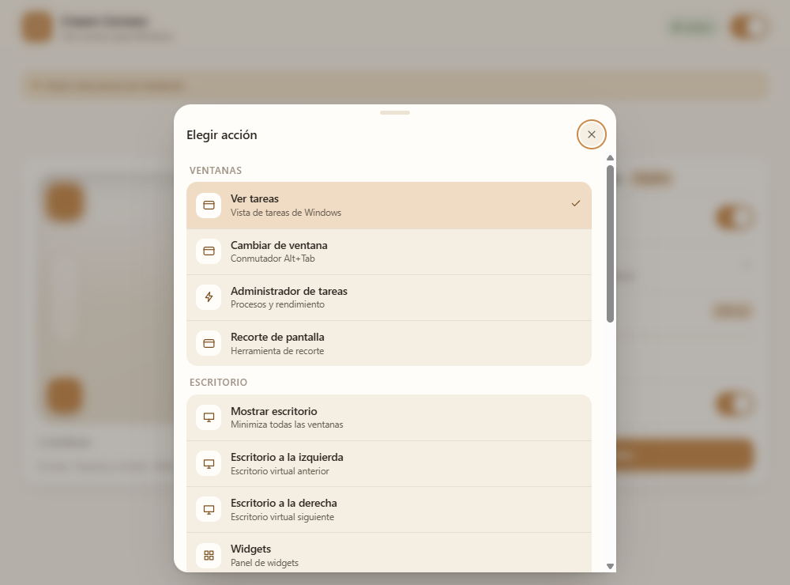

Hot Corners for Windows 10 and 11
Park the cursor in a screen corner or edge and an action fires: Task View, show desktop, lock the PC, a virtual desktop, a program or a URL. Cream Corners is a Rust + Tauri 2 tray app with a cream, iOS-style interface and no telemetry.
Version 0.1.0 · Windows 10/11 x64 · Free and open source (MIT)

Features
Eight zones, tuned the way you work
Every screen corner and edge is its own trigger, with its own action and dwell override. The global defaults keep it predictable.
-
Four corners and four edges
Eight hot zones per screen, each with an on/off switch, an action and an optional dwell override.
-
17 ready-made presets
Task View, Show desktop, Lock PC, virtual desktops, Task Manager, search, widgets, quick link and more.
-
Commands and URLs
Run a program with an argument list, no shell in between, or open http, https, ms- and shell: links.
-
Dwell and cooldown
220 ms global dwell by default, 0 to 3000 ms, plus an 800 ms cooldown so a zone does not fire twice.
-
Drag and fullscreen aware
Never fires while a mouse button is held, and it pauses while a fullscreen app is in the foreground.
-
Multi-monitor, tray resident
Cover all monitors or the primary only. Runs in the tray, keeps a single instance and can start with Windows.
Screenshots
A calm, cream iOS-style UI
The whole app is three panels: global tuning, the action picker and the About page.



Install
Installing Cream Corners on Windows
One installer, no account, no auto-update service. Grab the build from the latest GitHub release.
-
Download the installer
From the latest release, take
Cream Corners_0.1.0_x64-setup.exe(NSIS, recommended) or the.msi. -
Run it and accept UAC
Both installers are per-machine, land in
Program Filesand ask for elevation. The build is unsigned, so SmartScreen shows More info, then Run anyway. -
Set up your zones
The window opens on the zone editor. Defaults: top-left Task View, bottom-left Show desktop, bottom-right Lock PC. It stays in the tray.
SmartScreen note. Cream Corners 0.1.0 has no code-signing certificate, so Windows may show "Windows protected your PC". Choose More info and Run anyway only if you downloaded the file from the official GitHub releases page. WebView2 Runtime is required and ships with Windows 11 and most Windows 10 systems.
Known limits: not per-monitor DPI aware, so mixed-scaling setups can offset zone edges; elevated windows may ignore synthetic keys; no auto-update. Settings live in %APPDATA%\CreamCorners\settings.json. Full walkthrough: installation guide.
Compare
Cream Corners vs built-in Windows and HotCornersWin
Windows has no configurable mouse hot corners, so any hot-corner setup is an add-on. Here is how the options differ.
| Capability | Windows built-in | HotCornersWin | Cream Corners |
|---|---|---|---|
| Hot corners for mouse | No | Yes | Yes |
| Per-zone actions | — | Yes | Yes, corners and edges |
| Dwell / cooldown | — | Yes | Yes, per-zone dwell plus cooldown |
| Multi-monitor | — | Partial | Yes, all or primary |
| Open source | — | Yes (MIT) | Yes (MIT) |
| Price | Included with Windows | Free | Free |
HotCornersWin by flexits is the C#/.NET project that inspired this Rust rewrite.
FAQ
Hot corners questions
Does Windows have built-in hot corners?
No. Windows 10/11 has Snap Layouts and corner gestures on touch, but no configurable mouse hot corners; that is why this app exists.
Is Cream Corners free?
Yes. It is MIT-licensed, the source is on GitHub, and there is no account and no telemetry.
Does it work on Windows 11 and Windows 10?
Yes, on both, x64 builds.
Does it support multiple monitors?
Yes. Zones can cover all monitors or the primary monitor only.
Will it interfere with games or fullscreen apps?
It pauses when a fullscreen app is in the foreground (shell windows excluded), and drag suppression means it never fires while a mouse button is held.
How do I uninstall it?
Open Settings > Apps (or Control Panel) and uninstall Cream Corners. Optionally delete %APPDATA%\CreamCorners to remove the settings file.